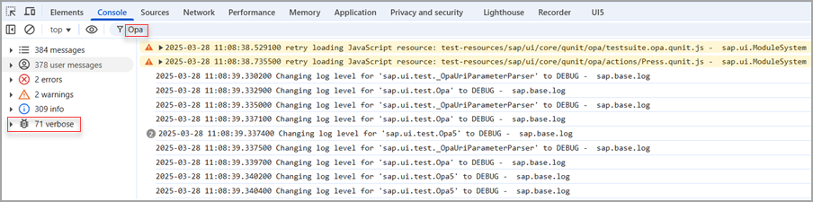

OPA checks many conditions before it passes a control to your matchers/actions/success functions.
If your control doesn't match these conditions, you're not able to set a breakpoint.
For such instances, OPA logs lots of information into the browser's console if you
turn on the OpenUI5
debug mode. You can either use the sap-ui-debug=true URL parameter
or the OpenUI5
Diagnostics. The diagnostics can also be
helpful to see the state of your UI.
After selecting verbose, you can have a look at the log and also filter it by looking for opa or matchers.

A frequent cause of error is typos in the view name or control IDs. These are easily found by looking through the logs.
viewNameIf there are multiple views with the same viewName, OPA5 may not
find the exact control you're looking for.
As of version 1.62, there are a couple of ways to ensure a correct match:
viewId parameter is introduced. You can set it in
Opa5.extendConfig(),
Opa5.waitFor() and in page object definitions.
viewId can be used standalone or in combination
with viewName. If OPA5 finds multiple views with the
same name, it prompts you to add a view ID with the test failure message
"Please provide viewId to locate the exact view.".
Only views that are rendered are used in OPA5 control search.
The size of the iFrame in which the app is loaded is as large as the browser window. It's scaled down to leave space for the QUnit info but the content is preserved the same as when run in full size. This means that regardless of the small iFrame, you shouldn't see any responsive change in the app's appearance.
If the test runs fine locally but control isn't found on another machine, there's a chance that the other machine's screen is too small and triggers the responsive behaviour of some controls. For example, CI executors with smaller screens or when the test is part of a suite and the iFrame is placed inside a suite wrapper much smaller than the screen.
One way is to test for the responsive behavior and add conditional
waitFors and test cases. Tests for different screens, such
as phone and desktop, are better separated in different test files.
If you want to work around the sizing issue and don't want to test responsive
behavior, you can set a fixed size for the iFrame. The idea is to write the test
for the small size which most probably results in the central environment. You
can use the width and height parameters of
iStartMyAppInAFrame or the opaFrameWidth
and opaFrameHeight URL parameters.
If either width or height isn't defined, a default value is assigned. The default screen size is 1280x1024 px. The iFrame takes 60% of the screen size, which makes the default iFrame size to be 768x614.4 px.
Maybe the app is loading too slowly for the OPA tests. If there's a local index
file that doesn't contain the library dependencies your app needs, the OpenUI5 bootstrap is
very slow. To fix this, add the dependencies you need in your application
descriptor's sap.ui.dependencies namespace. If you don't have a
descriptor, use the bootstrap option libs. For more information, see Manifest (Descriptor for Applications, Components, and Libraries) and Configuration Options and URL Parameters.
If this happens, your test is probably executing actions faster than it should.
If you encounter a failure, look at the current state of the UI - in almost all
cases an action couldn't be triggered or a JavaScript error occurred. This error
should be included in the console logs. If an action couldn't be executed, make
sure that you use the action parameter of OPA5's waitFor
function. When using the success function for triggering actions, OPA5 doesn't
check many things.
Here are some examples that have occurred in known apps:
An app was using the bindingContext of a control in a
press handler. OPA5 was way faster than a human user, so the
HTTP-Request that was sometimes finished by the time OPA5 was executing
the check, was sometimes still pending and so an exception was thrown.
The test failed because OPA was trying to reach a page that couldn't be
shown because of this error. This had to be fixed in the app.
When there was no action parameter available, a ListItem
got rerendered while a press action was executed on it. Due to the
rerendering, the List wasn't able to perform the click,
meaning it wasn't executed and the test failed. This only happened on
certain occasions, depending on the execution speed of the machine
executing the test. This is now detected automatically when using
actions.
Check the logs to see if your matcher is failing because it's checking a text
against a different language. If you want to always execute your tests with the
same language, use the sap-ui-language= URL or bootstrap
parameter.
If you require sinon-qunit.js, it overwrites the browser functions
setTimeout and setInterval. OPA needs these
functions and without them the tests don't start. You can either set the
fakeTimers to false in your test setup, or
maybe consider not using sinon-qunit.js together with OPA.
module("Opatests", {
beforeEach : function () {
sinon.config.useFakeTimers = false;
},
afterEach : function () {
sinon.config.useFakeTimers = true;
}
});For example, the tests run fine most of the time, but they fail:
in automated test runs
when run with different OPA speeds
sporadically on various steps
One way to stabilize your tests is to use OPA autoWait and
actions.
Examples of such controls are busy indicators, notification popups, and message toasts. These
controls set a timeout after which the control is supposed to disappear. In some
apps, it can be important to ensure that such a control is displayed. Note that if
you enable autoWait in your tests globally, then you have to
disable autoWait specifically in the waitFor
statements related to these special controls. For example, if you want to test that
a busy indicator is displayed during the sending of a request, you don't want to
wait for controls to be interactable:
oOpa.waitFor({
autoWait: false,
id: "myBusyList", // a control that is expected be covered by a busy indicator
matchers: new PropertyStrictEquals({
name: "busy",
value: true
}),
success: function (oList) {
Opa5.assert.ok(true, "My list is busy");
}
});